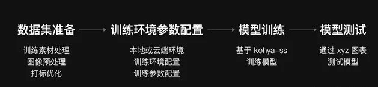
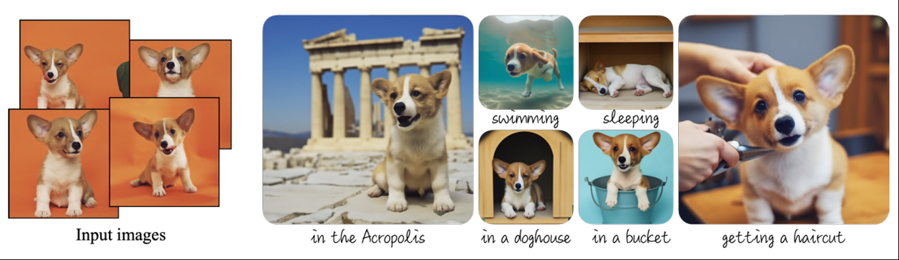
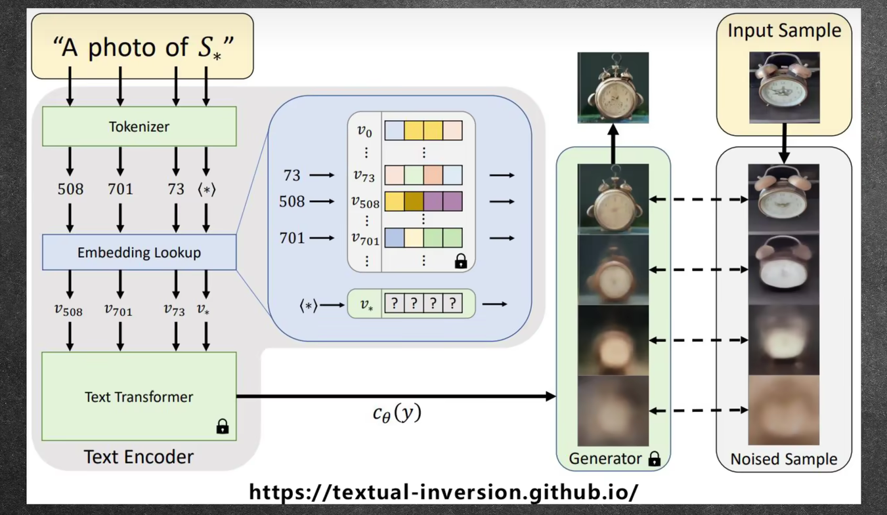
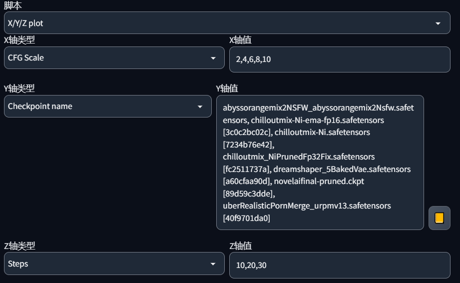
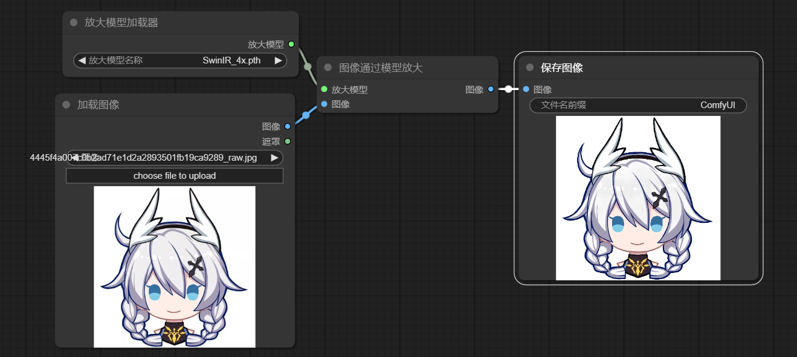
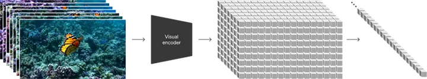

1. Stable Diffusion 概论
以AI绘图为代表的AIGC发展迅速，笔记可能已过时，但大体上的知识点仍然是互通的
关于 SD 模型原理，在大模型-Latent Diffusion中
零、AI 作品
风景


人物

视频
该视频于2023.05.30使用SD+Defourm插件制作
一、框架
要使用 Stable Diffusion，有下列主流框架
diffusion 库
pip install diffusion，即可通过代码跑SD
WebUI（Automatic1111）
基于官方SD模型而打造的开源项目，可通过界面交互的方式来使用Stable Diffusion，而且集成了各种必要的模块，方便使用模型和使用各种插件
ComfyUI
一个基于SD的节点式、工作流式的图形界面（同样是一个web界面）。它提高了使用SD的自由度，各种节点可自由组合，将各种不同板块组合到了一起，形成了一个完整的工作流，和虚幻引擎的蓝图、Blender的工作流编辑非常像
使用：
去github下载官方整合包，解压后双击cun_nvidia_gpu.bat这个批处理文件，即可启动ComfyUI，不需要额外安装各种依赖。或者选择一些up主（如秋叶）的整合包
这里安装的是秋叶整合包，打开启动器后跳转到浏览器，点击右侧设置按钮，调整语言为中文
SD.NEXT框架
原本是WebUI的一个分支，不断迭代后成为了一个独立版本
WebUI Forge
由WebUI改进而来的新框架
二、基本模型
在使用 AI 绘图过程中，往往会接触到下列模型
base model：基底模型
一般指最原始的模型，也就是诸如SD1.5、SDXL1.0、FLUX.1的模型
checkpoint：模型检查点
它通常是在base model之上经过Fine Tuning所得到的一个保存点，在Civitai.com上所看到的基础模型一般都是checkpoint。一般来说，也没人直接拿原始SD模型来直接开发下游应用，而是经过微调后得到checkpoint，再运用到下游
checkpoint一般是后缀名为safetensor、ckpt的文件，可视作魔改版的SD原模型
LoRA：大语言模型的低秩适应
具体原理见：大模型-Fine Tuning部分
虽然论文标题是针对大语言模型，但本质上其思想对任何大模型都有效。对于基于Transformer模型的大语言模型，LoRA一般是在Transformer以及前馈层中添加LoRA；针对于扩散模型，其思想是在U-net里增加一些层，训练这些层去调整U-net的输出（事实上调整的是UNet网络中Transformer结构中的权重），只需要保存添加的层，所以文件比较小，但需要基础模型
使用 LoRA
需要将 lora 文件放到指定文件夹
注意！有些Lora是有trigger words的，若prompt未包含触发词，则就算加入Lora也不会有效果
对于webui而言：可找到lora板块点击加载
对于comfyui而言：创建lora加载器节点，即可加载lora并调整参数
Lora权重：在prompt中，lora的第三个字符串表示所占权重，即lora在图像生成中占据多少权重
训练LoRA

数据集处理：
收集15-50张高质量的训练图片，主题明确，特征明显，背景不杂乱，主体多维度，避免相似度高的图片
处理图片，分辨率全部相同且需为64的倍数，可通过brime网站批量裁切
为每张图打tag，可安装 tagger 标签器插件辅助。打完tag，可选择将某些tag删除，而删除标签（如blue eyes）就相当于将特征与LoRA绑定在一起，使用该lora大概率会出现 blue eyes
训练环境搭建
本地：要求N卡，可用秋叶整合的一键训练包，或者安装训练插件
云端：可使用 kohya-ss 等训练脚本
模型训练
模型测试
Dreambooth
谷歌发布的训练模型的方式，通过特定场景图片训练基础模型，是一种全量微调策略，即可让模型总是生成以这些场景为主题的图片。目前主流checkpoint都是经过DreamBooth训练所得到的模型，在某一细分领域表现很好，缺点是总是生成某一类别的图片（如人物、风景等）
直接用新的图片和关键词去调整U-Net里的参数，保存整个修改过的模型，所以文件很大。同时训练所需的配置也要比训练LoRA更高。只要注入几张dog图片，后面就算prompt中没有dog，图片中也总是以dog为核心，如下：

VAE：变分自编码器
是一个美化模型，作用为滤镜+微调，一般该文件的名字中带有vae，后缀名一般为ckpt\pt等。有的大模型是自带vae的，再加入vae可能会适得其反
VAE充当的是像素空间和潜在空间的桥梁，更改VAE就是修改文本的嵌入
Textual Inversion：文本反演
后缀名为embedding的文件，主要作用在clip层的embedding lookup，让模型加入特定的、嵌入过后的词语，只需要保存到学习到的特征，文件非常小。常见的如easynegative，文本编码器见到这个词，就会去找特定的语义向量

Controlnet：控制网络
训练另外一个神经网络来控制U-net的输出
upscale model：放大模型
放大模型，使用不同算法给图片放大尺寸，后缀名.pth。这玩意有些是可能是自带的，有些需要另行下载
三、调度器与采样器
调度器
噪声调度器用于告诉采样器采样步数以及每一步的噪声应该是多少，常见的有Karras调度器，该调度器的特点是越接近采样完成，噪声步长会越小，有助于图像提升
注意：在webui中，调度器和采样器合并到了一个选项，如采样方法：Euler karras就同时包含了 Euler 采样器和 Karras 调度器
真人这种要求较为准确的场景，可使用DPM系列采样方法，对于卡通、动漫这种准确度要求不高、且速度有要求的，可使用UniPC、Euler系列（包括带 a 的）
采样器（sampler）
stable diffusion在去噪的过程中每一步都会产生一个新的图像样本，因此去噪的过程也被称为采样，采样过程中使用的方法就是采样器，换句话说采样器负责不断去除噪声
增大采样步数，就是增加降噪的步数，部署越多有助于减少截断误差，提升效果，但采样步数达到一定程度时效果已不明显，反而会提高算力要求
常见的采样器有：
Euler、Heun、LMS：这一类是古老的采样方法，但效果还可以，运行起来也比较简单；Heun比Euler更准确，但更慢；LMS和Euler一样快，但可能会更准确
Euler a 等带a（ancestral）的采样器：即祖先采样器，其采样结果具有随机性且结果图片不保证收敛。虽然不稳定，但有时候效果以外的不错，可以碰碰运气
DDIM和PLMS 系列，迄今已有点过时了，一般不再使用
DPM系列：是一系列发布于2022年的采样器，DPM2表示二阶，与DPM相比更慢但更准确；DPM++是DPM的优化版本，DPM adaptive可以自适应调整每一步的值，但可能非常慢
UniPC：2023年发布的新型采样器，可在5-10步内采样出高质量图片，对平面、卡通效果表现较好
K sampler：k采样器，它不是一个单独的采样器，而是一个github仓库，里面实现了以上诸多采样器。在ComfyUI中，可通过“K sampler”节点，来使用不同的采样器
四、常用插件
xformers
可以降低显存占用，作用在模型的 corss attention 部分
五、各种新模型
SDXL
特点
针对U-Net、VAE、Clip text encoder三大核心模块都做了改进
新增了一个独立于Latent的refiner模型，也是一个扩散模型，用来提升图形的精细化程度
新发布的0.9版本收集了反馈情况，并使用RLHF技术优化后推出1.0正式版
训练图像为1024*1024的分辨率，因此可以直接生成高质量的高分辨率图像
各种模型，如lora、vae等，和SD1.5等模型不兼容
在训练时，由于要保持同一批训练图像尺寸相同，在1.x时代不得不丢掉一些低分辨率的、以及长宽比不同的图。在sdxl训练时，将图像尺寸条件化、图像裁剪参数条件化，将吃尺寸、裁剪作为原始条件也加入训练，提升模型能力
sdxl可能需要更高的采样步数，建议25及以上；采样方法优先选择Euler系列、DPM++系列、Uni_PC系列，采样器首选Karras
架构
包含base模型和refiner模型，前者作用和sd1.5等版本一致，具备文生图、图生图、inpainting等功能，refiner本质在做图生图工作，对base模型生成的图进行精细化提升
refiner模型也是基于latent的扩散模型，同样包含U-Net、VAE、Clip text encoder三大模块，prompt一样作用于refiner。refiner模型同样是safetensor文件，且名称中一般带“refiner”字样
如果checkpoint生成的图片已经足够好，就不需要使用refiner。
SDXL Turbo
在SDXL1.0基础上设计的新的蒸馏训练方案，该模型只需1-4步即可生成高质量图像，其网络架构和SDXL一致，主要是优化了生成图像时的采样步数，且不包含refiner部分
FLUX
由黑森林实验室（Black Forest Lab）推出的文生图模型。该模型引入了流匹配训练方法、旋转位置嵌入和并行注意力层，在生成图像的质量方面达到了SOTA
FLUX.1 拥有120亿参数，远超SDXL等模型，这让它的使用门槛提升了许多，但也带来了显著的质量提升。FLUX在手部、长文本、提示词遵循度、图片长宽比可变性等方面有了飞跃性提升
该模型只有正向提示词，没有负向
当前一共三个版本：
Pro：闭源，拥有最佳性能
dev：开源，是在 Pro 的基础上蒸馏而来，以少量质量为代价换来了显著的使用门槛降低
schnell：开源，在 dev 的基础上进一步蒸馏迭代步数而来，质量有了明显的下降，但只需4步即可生成图片
目前 FLUX 正受到开源社区的追捧，诸如 LORA、controlnet 等都在为其进行适配
六、注意点
之前的模型后缀都是使用的.ckpt，现在为了安全已换成.safetensors，但两者基本一致，都可放置在Stable Diffusion文件夹下使用。.ckpt是序列化的，有可能包含恶意代码，而.safetensors是用numpy保存的，只包含张量数据，更安全
fp16和fp32对生成图形影响不大，可以选择fp16。fp32模型的大小是fp16的接近两倍，且后者运算更快。若使用fp16出现黑图问题，可换回单精度模型试试
有些选项需要依赖于未进行下载的包，例如面部修复。勾选后将自动进行下载（CMD里可以看到）
一定要输入正负面画面质量的提示词，例如best quality和low quality；另外有些模型需要使用配套的EasyNegative嵌入式模型，不然效果可能不佳；在性能足够的情况下尽量跑更高的分辨率，能得到更好的效果。当前AI出图不再仅仅是关键词了，各种插件（例如动态CFG等）、各种embedding（如easynegative）、clip跳过层等都是影响画面质量的关键
影响图像成品最主要的几个因素：CFG的大小、Lora的使用和权重的分配。其他的因素比如分辨率、steps、采样方法等对结果的影响远没有前面三者的大
图片信息（PNG info）：上传AI生成的PNG图片，即可看到图片生成时所使用的各种参数，比较详尽，可以用来重现类似的图片
注意prompt在不同类型图片中的使用，某些词在二次元风格图片中就可以取得较好的效果，而在真实风格图片中，可能因为没有这样的样本而导致效果不好，真实中可能很难找到这种图片来训练，而二次元中可能就比较容易画出这样的效果
对于CFG而言，不同模型、不同风格的图片可能会有不同的适应度，即最佳的CFG可能不一致，需要调整
模型融合也是一种得到新模型的一种方式，挑选各种模型，按一定比例混合其中不同层的参数，得到融合模型
2. ComfyUI
以ComfyUI为主，也包含了WebUI的一些东西，但无论是哪一种框架，AI绘图的知识点和主要流程都是类似的
一、文生图
画图要点
先总体再部位，分层设置提示词
比如要画一张女生图，一般的提示词板块设置为：
使用的小模型：lora等
画面质量：highresolution、raw、best quality、CG、8K等
画面环境：bedroom、kitchen等
主体：1girl、beautiful girl、full body等（如果是单人特写可与画面环境交换次序以提升重要性）
动作：lying、beg、arms behind back等
其它细节：如bunny girl、各种装饰、长发还是短发等
提示词
提示词（Prompt）：分为正负两方面
AI 会按照 prompt 提示词输入的先后顺序和所分配权重来执行去噪工作
AI 也会依照概率来选择性执行，如提示词之间有冲突，AI 会根据权重确定的概率来随机选择执行哪个提示词
越靠前的 Tag 权重越大，比如景色Tag在前，人物就会小，相反的人物会变大或半身
生成图片的大小会影响 Prompt 的效果，图片越大需要的 Prompt 越多，不然 Prompt 会相互污染
Prompt 支持使用 emoji，且表现力较好
正负面prompt都不是越多越好，这里的太多指的不是数量多，而是重复prompt太多。太少可能达不到想要的效果，太多会使画面中出现奇怪的东西
常用正向提示词：
| 正向提示词 | 描述 |
|---|---|
| HDR, UHD, 8K (HDR、UHD、4K、8K 和 64K） | 这样的质量词可以带来巨大的差异提升照片的质量 |
| best quality | 最佳质量 |
| masterpiece | 杰作 |
| Highly detailed | 画出更多详细的细节 |
| Studio lighting | 添加演播室的灯光，可以为图像添加一些漂亮的纹理 |
| ultra-fine painting | 超精细绘画 |
| sharp focus | 聚焦清晰 |
| physically-based rendering | 基于物理渲染 |
| extreme detail description | 极其详细的刻画 |
| Professional | 加入该词可以大大改善图像的色彩对比和细节 |
| Vivid Colors | 给图片添加鲜艳的色彩，可以为你的图像增添活力 |
| Bokeh | 虚化模糊了背景，突出了主体，像 iPhone 的人像模式 |
| (EOS R8, 50mm, F1.2, 8K, RAW photo:1.2) | 摄影师对相机设置的描述 |
| High resolution scan | 让你的照片具有老照片的样子赋予年代感 |
| Sketch | 素描 |
| Painting | 绘画 |
注意：
正向prompts不是越多越好，尤其是含有互相冲突的prompts的情况下，比如同时含有“arms behind head”和“press face”，这样冲突的词，一般模型会以权重为依据随机挑选一个，但若冲突部分太多，则可能导致画面崩坏。简单即是多
根据模型来选择合适的prompt，比如风景checkpoint就可以用wide lens等，而人物checkpoint则可用动作、外貌的提示词。其它的，比如一个正经画妹子的模型，强行塞不正经的提示词，因为训练的时候就基本没有这种样本，所以很难画出好东西
负面prompt在某一类绘图中基本都是通用的，比如画人、画风景等，如果为了简便都可以用一类prompt通用。负面提示词中比较常用的词汇，已被做成类似easynegative等embedding了，可直接下载使用
提示词的进阶使用
注意：提示词的语法、分隔符和组合符（都必须是英文半角的）
一般流程：先把要描述的画面写下生成一次，根据生成结果边试边改不满意或遗漏的描述，要强调的概念用 (xxx: 1.x ) 语法形式来提升权重，其中 xxx 是要强调的词 1.x 代表要提升的比例，如 1.5 就是提升 150% 的权重。权重取值范围 0.4-1.6，权重太小容易被忽视，太大容易拟合图像出错
分隔符：逗号。分割词缀，有一定的权重排序功能，逗号前权重更高，因此建议排序：
综述（图像质量+画风+镜头效果+光照效果+主题+构图）
主体（人物&对象+姿势+服装+道具）
细节（场景+环境+饰品+特征）
组合符：
冒号：自定义权重数值格式，例如(1girl:0.75)表示单人女孩权重为0.75
圆括号：权重乘1.1，如(1girl)，表示权重乘1.1
花括号：权重乘1.05，与圆括号用法类似
方括号：权重除1.1
复合括号：多次叠加权重，如(((1girl)))，表示权重乘1.1的三次方
连接符：+, and, |, _ 都可连接描述词，但各自细节效果有所不同
采样方法和采样步长
Sampling method和Sampling Steps：采样方法和采样步长
采样方法本身没有绝对意义上的优劣之分，只有是否合适一说，只要能达到预期的效果，就是好方法
采样步长也必须合适，太小会导致随机性很高，太大会导致效率降低（和低的steps效果差不多但是生成图像所需时间更长）
三种优化技术
Restore face
主要用于优化面部，首次使用会自动在cmd界面中下载扩展包，不够效果貌似一般
Tiling
CUDA的矩阵乘法优化，一般不用
Highres
在内部生成低分辨率的图，放大并添加细节后再输出
因为直接使用高分辨率画图，可能会出现奇怪的情况，比如画出了多个人。这种情况在风景图等也存在。原因在于原本的模型大多是使用512*512的训练样本来训练的，要是分辨率过高，会导致AI误以为在生成多张图。超过800*800的图都使用高清修复会更好出结果
高清修复本质就是生成了一张低分辨率的小图，然后放到图生图里提升分辨率和细节
当需要画出高分辨率图像时，最好使用高清修复。不过这个方法可能还是会出现问题
放大算法若是人物类图片，优先选择R-ESRGAN 4x+，潜变量latent有时候也还行
Denosing strength：重绘程度，即对原图片的保留程度，和CFG有些相似。越接近于0，则在生成高分辨率图时会保留更多的低分辨率的图。而越接近1则重绘程度越高。可把数值看成百分比
一般在0.4~0.7之间比较好
注意：
对于真人而言，如果重绘程度和CFG都很小，图片会有一种朦胧感
只有适合的CFG和适合的重绘程度才能生成好图，不然图片会变得非常诡异
CFG一般不超过10和不低于2，最大不能超过20，重绘程度一般不大于0.8，否则可能会出问题
重绘程度越大，则会有越多的细节，但是细节太多也不是一件好事，比如出现奇怪的东西
重绘幅度在0.7以前一般都是一个画风，而到了某个值以后就会发生画风变化
可用脚本X/Y/Z plot进行测试，发现最好的参数
batch count和batch size
count是出图的轮次，而size是每一轮出图的数量。count和性能无关，而size直接和性能挂钩，性能差则size无法拉高，否则很可能爆显存
CFG scale
AI对描述参数的倾向程度，越高则越倾向于prompt，而随机性下降。该参数会显著影响最终结果
基本上都在4~8之间最好
低 CFG：图片糊、看起来雾蒙蒙的，色彩对比弱，构图也比较差，图片结构未定型
高 CFG：图片对比度非常强，色彩非常饱和，甚至会过饱和，颜色和结构失调
加载LoRA
lora加载器，右侧model连接采样器，左侧连接大模型（另一个lora），左侧clip连接大模型，右侧连接prompt文本；至于反向提示词，连lora还是大模型都可以，但正向提示词必须要连lora
一图分区域编写prompt
Conditioning(set Area)：该节点连接在文本编码器之后，可分别设置不同区域的prompt，包括正向和反向，注意设置正确的宽高合XY位置。
只需要给多个prompt加入Conditioning(set Area)调整prompt的影响范围，随后加上一个ConditioningCombine将节点合并，随后将合并节点接入采样器的prompt。
一般反向提示词可以共用，不需要处理。
注意ConditioningCombine节点只能两两合并，要是多个图片则需要多次合并。同时，对于这类需要“合并”的图片，如果直接合，会有一个明显的分隔而不像一张完整的图，这时需要再加入一个条件文本，进行合并。工作流演示：multiPhotoCombine.json在ComfyUI打开
如果合并边界处仍然有问题，可换个种子重新试一下
建议多个区域，只写本区域特定元素（如xx人物），而在多图合并时的prompt，写场景信息
如果光影以及其它区域还存在问题，还可通过后续处理进一步完善
多参数同时生成图片
在comfyui中，可使用多个lora、采样器、vae、保存图像等节点，可实现类似webui的xyz-plot多参数对比效果，相当于一种超参数搜索，可快速根据出图得到最合适的参数组
脚本
webui中的脚本
方便比较使用各种参数所得到的结果，一般使用X/Y/Z plot
例如以下这个例子：共生成x、y、z值的乘积张图片，其中不同值之间用逗号分割

其规律为：Z、Y、X重要性依次降低，即每次生成总是先取定一个Z或Y，再生成 X 的各个值
prompt S/R：
是xyz图的一个子项，即提示词搜索和替换，比提示词矩阵更加好用
用法：若在prompt中输入了提示词A，则在其值中可输入A，B，C，此时会分别以提示词A、B、C生成3张图，便于比较不同提示词之间的差异
ps：也可以用该功能来方便跑不同类型词的图，比如跑5张修女和5张 jk 图。这样的话，记得勾选随机种子为1
comfyui实现脚本
需要通过efficiency nodes插件，可见工作流：XY Plot.json
位置：新建节点-效率节点，搜索和自动推荐不一定包括进来想要的节点了，有时需要自己去找
采样器(效率)中有一个脚本接口，选择xy图表即可实现XYZplot功能；加载器(效率)的clip可不连任何节点
注意”手动输入“节点，需要用 ; 分隔而不是 , 分隔！
clip跳过层
不是将clip网络最后一层的输出传入Unet网络，而是将倒数第n层的隐藏状态传递给Unet，最终会对输出有一定影响，可超参数搜索决定合适的clip跳层
注意：webui里clip跳层是正数，表示倒数第n层输出；comfyui里是负数，但意思一致
comfyui设置节点：clip设置停止层（负数形式）
二、图生图
本质上是用现有的图片作为隐空间数据，替换掉了空latent节点中的随机噪声
关键节点
load image：image用于图生图，mask用于局部重绘，如果不使用局部重绘就不连
vae encode/vae内补编码器：vae连接大模型或vae加载器，latent连接采样器
upscale image/按系数放大image：修改出图尺寸
外补画板：用于扩展图片
反推提示词
通过一张AI图片，推断出来这张图所使用的prompt、CFG等各种参数，一般有以下两种方法
CLIP反推：一般是一句话描述，描述也比较准确
DeepBooru反推：结果也比较准确，但不是一句话描述而是关键词堆叠，很像prompt的风格
图片信息板块只适用于携带了图片原始生成信息的PNG图片，若是生成时没勾选保存生成信息，或者生成的不是PNG图片，则不能使用图片信息，这个时候反推就可以派上用场
其他设置
采样器重绘幅度需要调整，越高相似度就越低
局部重绘
在”加载图像“节点之后，建立VAE编码，连接“设置Latent噪波遮罩”，然后连接K Sampler
右键加载图像，点击”在遮罩编辑器打开“，即可看到重绘区域的弹窗，可使用画笔绘制需要重绘的区域，注意prompt只对应需要重绘的区域而不是整个图。
注意：调整重绘幅度（0.5左右），才能比较好地出图！此外，也可也使用controlnet中的inpating模型进行重绘
控制出图尺寸
如果不进行任何处理，则出图尺寸和原图一致
在image loader和vae encode之间添加一个upscale image节点，如果不使用裁剪而直接更改尺寸，那么出图就是自动拉伸；也可以选“图像按系数缩放”
图片放大
对应webui的高清修复
直接放大（模型放大）
直接对像素空间放大，对应高清修复中的用模型放大，即采样完成后，直接放大图像尺寸，这样虽然分辨率高但没有细节
可解码后直接通过“upscale image”或“图像按系数缩放”节点直接缩放，也可以插入“图像通过模型放大”节点，使用“放大模型加载器”加载放大模型。直接放大的效果并不好。注意，通过放大模型放大，其尺寸一般是由放大模型本身决定的，如 4x 就是长宽均放大4倍
对于一般的类似矢量的平面图，可无需大模型，直接用放大模型放大，注意放大模型的放大倍数

潜在放大
对潜在空间放大，对应webui的高清修复中的 latent 默认选项
本质上就是生成一张图后，将其解码并放大尺寸成大图，再将其编码然后又一次采样，此次采样去除的是放大尺寸过程中产生的噪声，其降噪对应重绘幅度，一般采样参数和第一个采样器一致，只是降噪改到0.5左右。最后解码成图像
节点：“Latent缩放”/“Latent按系数缩放”
在 k 采样器之后，可直接解码并保存图片，也可也直接再连出一条线到Latent缩放上，并再次采样和解码保存。
具体可参考workflow：highresFix_Latent.json
智能扩图
可扩充图像的四周，通过”外补画板“节点，其上下左右分别设置扩图区域，该节点位于加载图像/upscale image---vae内补编码器之间
三、ControlNet
是一个插件，它通过额外的输入来控制预训练的大模型，可以提高产出的精度，极大避免了各种差错
注意：
使用该插件有着更高的显卡要求，因为要使用额外的模型
可以使用它来控制人物的骨骼、动作等，因此可以用来做动画
基本流程（ComfyUI）：load images--预处理器--(preview image)--apply controlnet--K采样器正向提示词
controlnet网络有多种，如openpose、lineart等，和预处理器一一对应，注意选择正确的模型
要使用多个controlnet，只需要在 apply controlnet后面继续接apply controlnet即可
可参考本目录下的assets文件夹下的 controlnet.json 文件（利用comfyui打开）
预处理器系列
通过输入的图片得到指定的框架，如线稿、openpose、语义分割等，然后加载controlnet并基于此框架指导最终的图像生成，直接搜预处理器即可
openpose：骨架、姿态预处理，该节点输入一张图片，输出该图片的骨骼（姿态）图像
openpose姿态及手部检测：带手部的姿势检测
lineart：线稿预处理器，输出被输入图片的线稿
canny：也是一个处理线稿的
color：参考原图的颜色，生成一张马赛克的图片，控制最终出图的颜色划分
直线检测（MLSD）：检测输入图片中的直线，常用于建筑等
分块检测（segmentation）：语义分割，用不同的色块标注不同的物体
Apply ControlNet（高级）节点
image的输入是诸如lineartprocessor、openpose这类的节点输出
conditioning分别是正、负提示词clip
controlNnet输入连接Load ControlNet
conditioning输出连接采样器prompt
强度：用来控制权重
开始/结束时间：在绘图时，controlnet在什么时候开始/结束控制（根据采样步数）
Load ControlNet，加载控制网络，CONTROL_NET输出接Apply ControlNet
四、Deforum
Deforum是WebUI的一个插件，可以根据提示词生成动画
该插件一个明显特点就是使用“key frame”，即关键帧，几乎每种变动，比如视角转变、controlnet介入等，都可以设置入点出点，以此达到关键帧的目的
主要功能板块
Run：AI模型基本参数调节，如采样方法和步数、视频宽高等。这些基本参数是不可以打关键帧的、最基本的参数
Keyframes：设置视频其它参数比如最大帧数，并且可以打关键帧
下边还有一些其它的小功能板块，比如镜头的移动，噪声的选取等，甚至可以给主模型打关键帧，在不同时刻使用不同的主模型
Prompts：提示词板块，设置贯穿全视频的正向和反向提示词，还可设置在不同帧时不同物体的开始出现，也就是提示词关键帧
注意Prompts的格式是JSON格式，不能更改。如果要加新的关键帧也要符合原来的格式
Init：设置初始帧或视频，即以某张图或某段视频为开始，继续生成动画
Controlnet：使用控制网络达到更好的效果
可同时启用多个网络，且可设置控制网络介入的关键帧
Hybrid Video：hybrid表示“混合”，即混合视频或融合视频
Output：输出选项，可设置FPS、是否超分辨率以及超分辨率的算法、是否保存生成的每一帧的图片等
设置好后，点击右上角 Generate 即可生成视频，生成完成后可点击查看或到文件夹里去找
视频一般在 outputs 的 img2img 文件夹里边。如果未勾选delete imgs，则在文件夹里也会保存生成的每一帧
五、注意点
为了便于区分，可为每个节点重命名
按下ctrl+鼠标左键，可多选节点；按下shift才能整体拖动；每个节点右下角都可改变节点大小
k采样器可预览图像（如果启动器设置没关闭的话），也有图像预览节点preview image
可新建组，将组的框框的范围扩大，此时直接移动组就可以同时移动组内所有节点
直接拉出节点，会自动推荐合适的节点
workflow默认存储在undefined/my_workflow里
虽然下载了预处理器、controlnet插件，但里面的模型还没有下载，其中预处理器在第一次使用预处理器节点时会自动下载，而controlnet需要自行去GitHub/huggingface下载
生成的图像崩了，优先调：lora的权重、增大到合适的采样迭代步数、增大分辨率，CFG不要太高。尝试使用高清修复而不要直接生成高分辨率的图
每次绘图，当一张图片快画完时，显存的占用会显著上升。若一开始显存占用就很高了，那么极有可能在即将结束的时候爆显存
3. Sora
Sora 是由 OpenAI 推出的文生视频（Text-to-Video，T2V或TTV）模型，不仅在画面质量上远超同期的其他模型，并且能生成60s的最长视频长度、具有惊人的画面连贯性，达到了影视级的效果
特点
高质量
灵活：支持不同时长、不同分辨率、不同长宽比的视频，并且支持多机位
时空和角色的一致性：主体在时间线上连续且一致，很少发生畸变等情况
多模态的语言理解与文本提示：能支持图片或视频作为prompt
核心架构：扩散Transformer
目前生成视频的模型中主要有GAN和扩散模型，GAN诞生更早，而扩散模型效果以及稳定性都更优。然而扩散模型仍然无法做到较好的连贯性
Sora 基于扩散模型，并通过引入 Transformer 模型代替传统的 U-net 网络，通过注意力机制使模型能更好地把握时空连贯性

Sora 将训练数据的每一帧进行分块，称为时空潜图块（Spacetime Latent Patch），然后通过编码器将其转化为时间上的一个序列